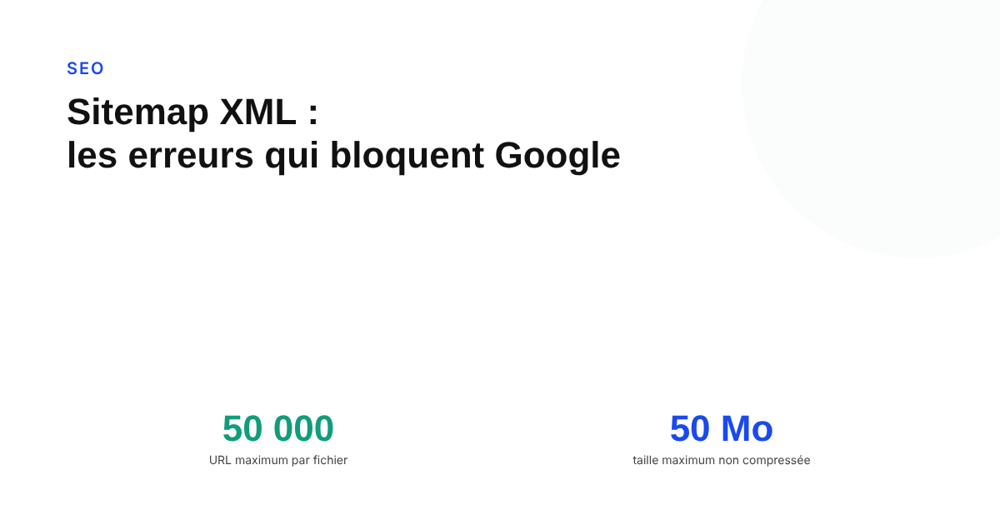
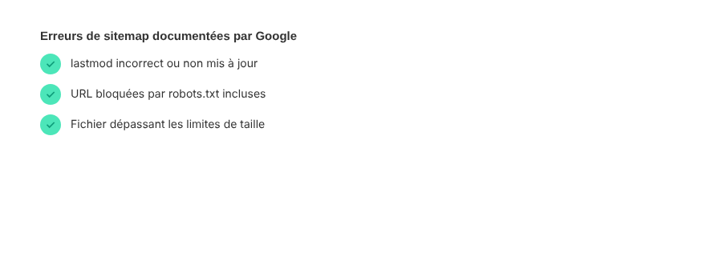

Sitemap XML : les erreurs qui empêchent Google de l'utiliser correctement
Un sitemap XML mal construit ne provoque pas d'erreur visible : il se contente de ne servir à rien. Les limites précises et les erreurs documentées par Google Search Central, pour un fichier qui remplit vraiment son rôle.

Le sitemap XML est l'un des rares fichiers techniques SEO que l'on configure une fois et qu'on oublie ensuite. C'est aussi l'un de ceux où une erreur silencieuse peut perdurer pendant des mois sans qu'aucun symptôme évident n'alerte : Google ne renvoie pas d'erreur bruyante, il se contente de moins bien utiliser un fichier mal construit, voire de l'ignorer partiellement.
Ce qu'un sitemap fait réellement : un indice, pas un ordre
Première chose à intégrer, d'après la documentation officielle de Google Search Central : soumettre un sitemap ne garantit ni que Google va explorer, ni qu'il va indexer les URLs qu'il contient. C'est un signal qui aide à la découverte, particulièrement utile sur un site volumineux ou mal maillé en interne — pas un mécanisme qui force la main du moteur de recherche. Un sitemap irréprochable techniquement reste donc une condition nécessaire, pas suffisante, pour une bonne indexation.
Les limites de taille, précises et non négociables
Chaque fichier sitemap est limité à 50 000 URLs ou 50 Mo non compressé, selon la limite atteinte en premier — cette contrainte s'applique à tous les formats de sitemap. Au-delà, la solution documentée consiste à découper le contenu en plusieurs fichiers sitemap, éventuellement regroupés et soumis via un fichier d'index de sitemaps. Un site e-commerce avec plusieurs centaines de milliers de pages produit dépasse rapidement cette limite sans un découpage automatisé et correctement maintenu.

lastmod : utile seulement si elle dit la vérité
Google précise n'utiliser la balise lastmod que si elle est constatée comme exacte « de façon cohérente et vérifiable », par exemple en la comparant à la date réelle de dernière modification du contenu de la page. Doivent compter comme un changement significatif : une mise à jour du contenu principal, des données structurées, ou des liens de la page. Un simple changement de millésime de copyright en pied de page, en revanche, ne compte pas. Une balise lastmod mise à jour automatiquement à chaque déploiement, sans lien avec un vrai changement de contenu, risque d'amener Google à ignorer purement et simplement cette balise sur l'ensemble du sitemap — un effet qui va à l'encontre de l'objectif recherché.
Les erreurs de structure les plus citées
Au-delà de la taille et de lastmod, la documentation Google liste des erreurs précises à éviter : utiliser des URLs relatives au lieu d'URLs absolues complètes (avec le protocole et le domaine), ne pas échapper correctement les caractères spéciaux dans le XML, encoder le fichier dans un format autre que l'UTF-8, inclure des URLs non canoniques alors que seule la version destinée à apparaître dans les résultats de recherche devrait y figurer, et placer le sitemap dans un répertoire qui n'a d'effet que sur ses sous-dossiers plutôt qu'à la racine du site. Un sitemap text ne devrait par ailleurs contenir que des URLs, une par ligne, sans aucun autre contenu.
Ce qu'il faut vérifier concrètement
Dans Search Console, le rapport Sitemaps indique le statut de traitement et le nombre d'URLs découvertes par rapport au nombre soumis : un écart important entre les deux est le premier signal d'alerte à investiguer. Les flux RSS ou Atom, parfois utilisés comme sitemap, ne couvrent généralement que les contenus récents et ne peuvent pas décrire correctement les images ou les contenus d'actualité — un sitemap XML dédié reste la solution la plus fiable pour un site qui dépend du SEO pour sa visibilité.
FAQ
Un sitemap XML garantit-il que Google va explorer toutes mes pages ?
Non. Google le précise explicitement dans sa documentation : soumettre un sitemap n'est qu'une indication pour aider Google à découvrir vos pages, pas une garantie qu'il les explorera ou les téléchargera toutes. Un sitemap bien construit augmente les chances de découverte, il ne force rien.
La balise lastmod est-elle vraiment utile pour faire revenir Google plus vite sur une page ?
Seulement si elle est fiable. Google indique utiliser lastmod uniquement quand elle est constatée comme exacte de façon cohérente et vérifiable, par exemple en la comparant à la date réelle de dernière modification de la page. Une date mise à jour sans changement substantiel du contenu (comme un simple changement de millésime de copyright) n'a pas d'effet, et peut même amener Google à ignorer la balise sur l'ensemble du sitemap.
Combien d'URLs peut contenir un seul fichier sitemap XML ?
50 000 URLs maximum, ou 50 Mo non compressé, selon la limite atteinte en premier. Au-delà, il faut découper le sitemap en plusieurs fichiers, éventuellement regroupés via un fichier d'index de sitemaps soumis à sa place.
Envie de vérifier si votre sitemap fait vraiment son travail ?
Pour aller plus loin, voir la page SEO, et l'article Pourquoi Google n'indexe jamais certaines de vos pages.
Pour continuer sur ce sujet.